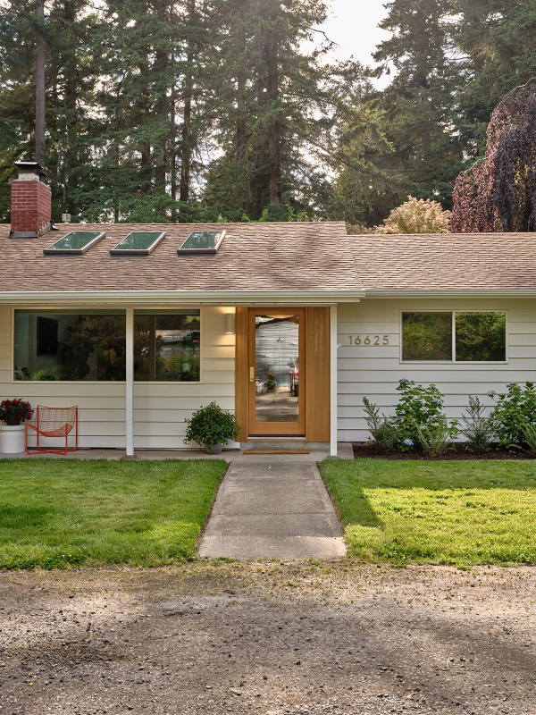
Portland, Oregon
Established — where the practice began 45.52°N 122.68°W
Mid-century stock under Douglas firs: ranches and split-levels with good bones and fifty years of deferred decisions. This is the work that built our name.
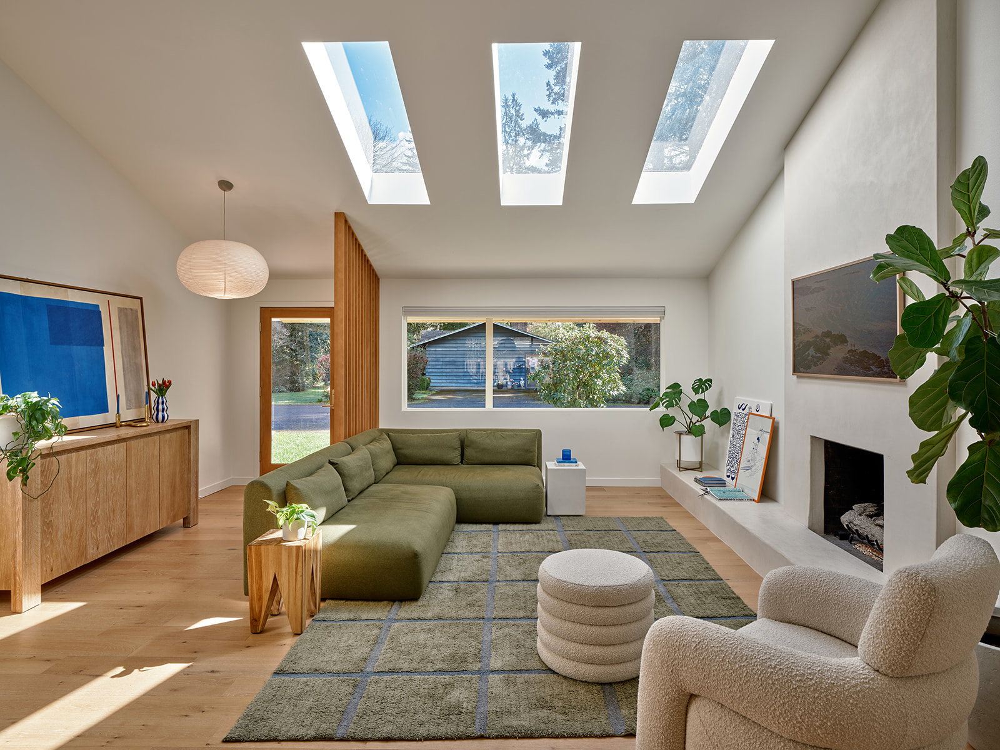
Residential design & development
Overlooked homes, acquired with discipline and rebuilt with a designer’s eye — in Portland, Oregon and St. Petersburg, Florida.
A different kind of flip
Every house we take on is treated as a commission, not a transaction — fully designed before the first wall opens, specified down to the cabinet pull, and built by trades we trust. The result is a home that feels inevitable. The return follows.
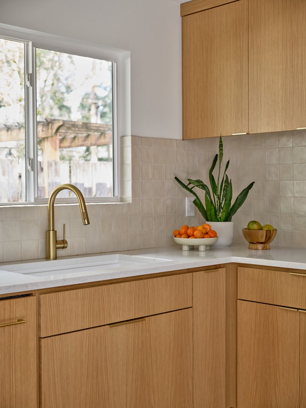
Selected work — № 01
A 1960s ranch under the Douglas firs, taken back to its bones and rebuilt around light: a vaulted great room with three new skylights, a rift-oak kitchen, baths in blush zellige and hand-glazed indigo, and a cedar-wrapped porch that finally lets the house greet its street.
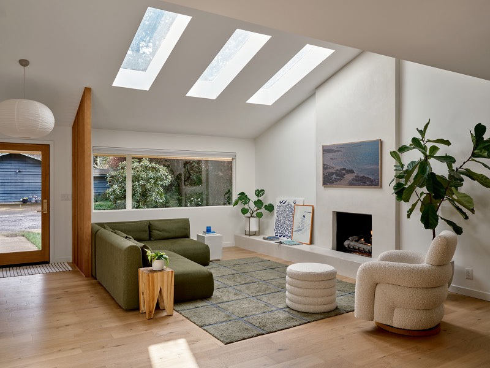
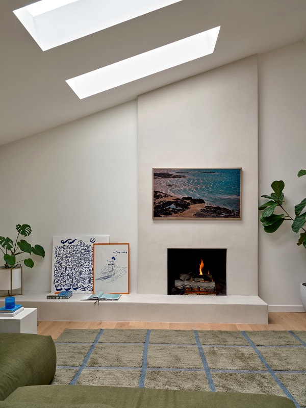
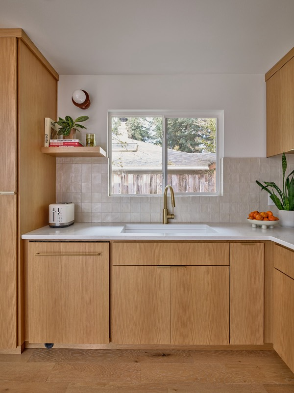
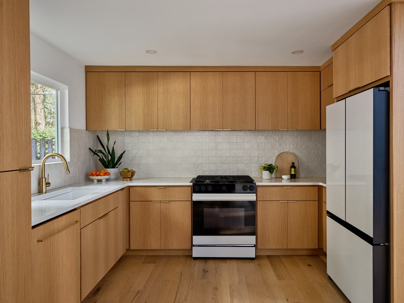
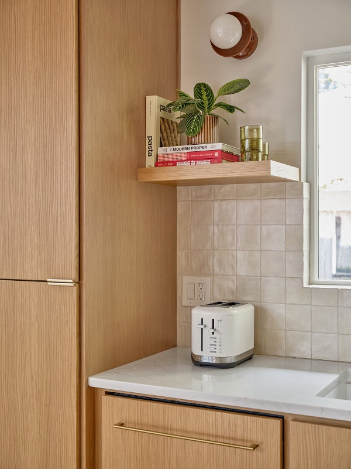
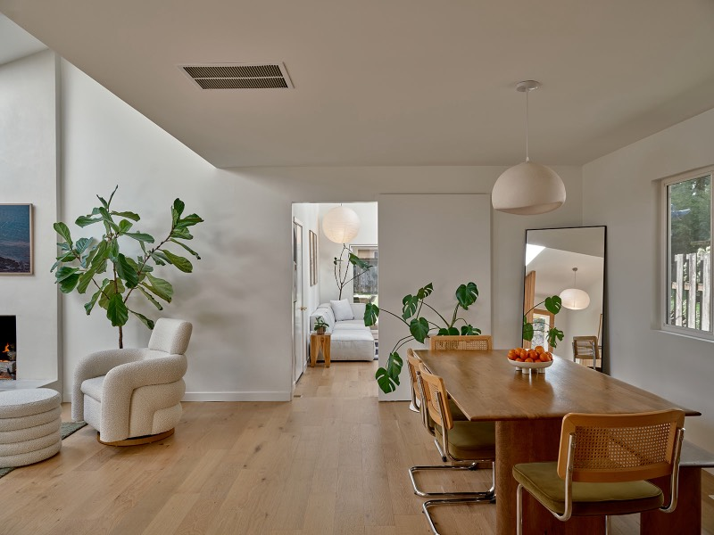
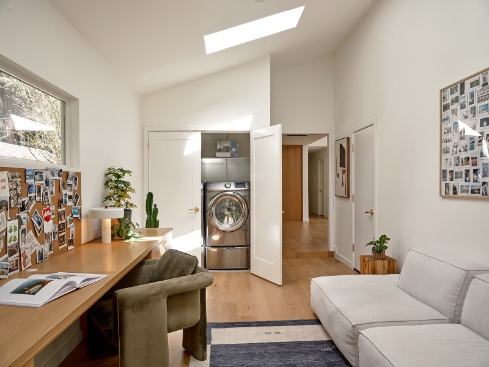
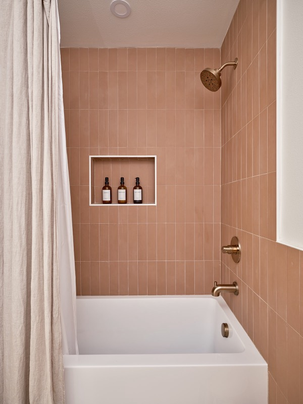
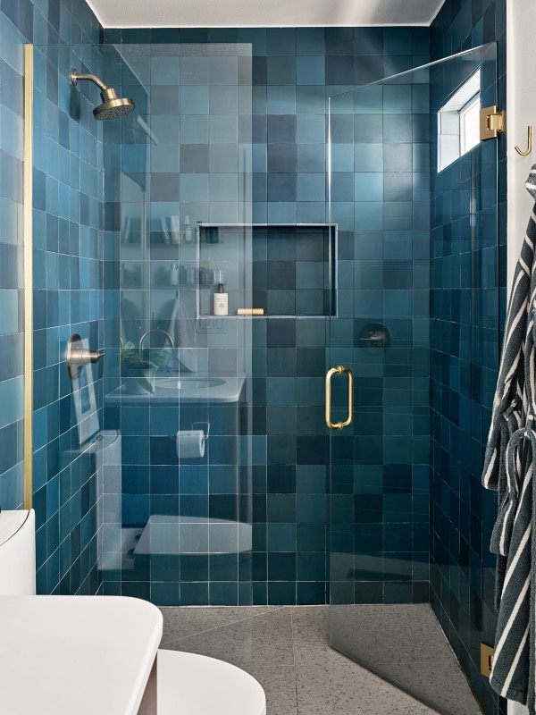
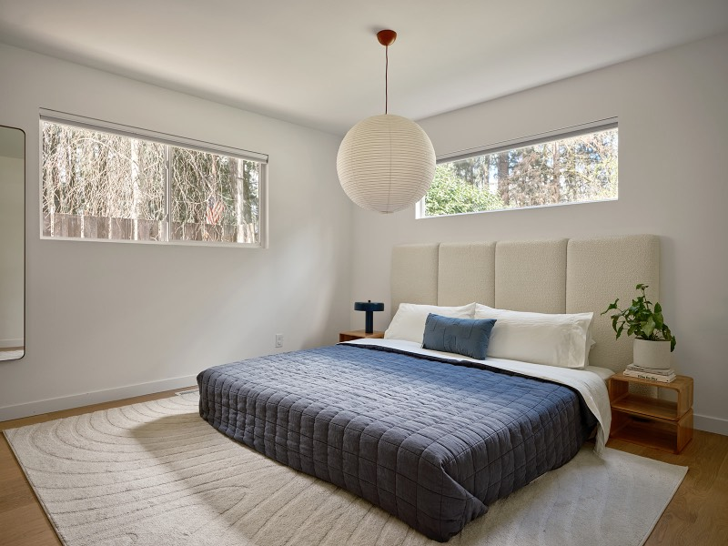
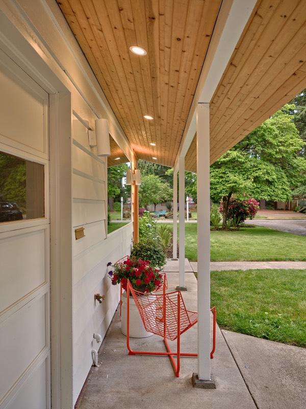
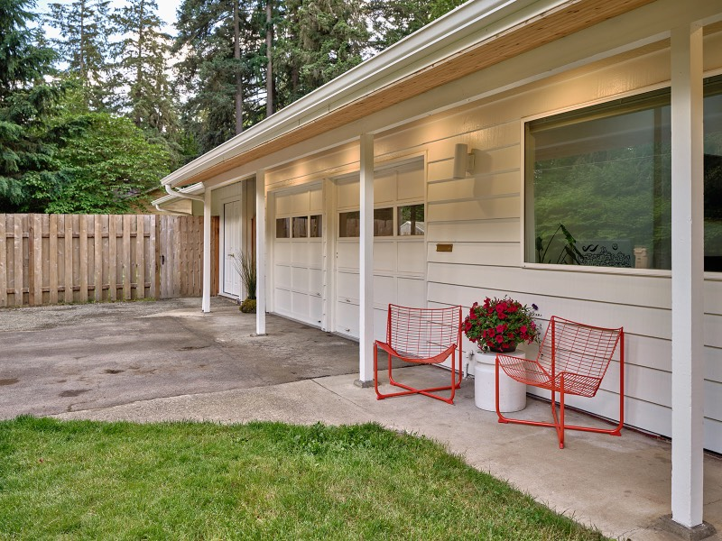
More work is photographed each season — the archive grows as projects complete. Ask to see the full portfolio →
How we work
Discipline at the buy. We underwrite conservatively and choose houses for their bones — proportion, structure, lot, and light that others walk past.
Every project is fully designed before demolition begins: plans, palettes, millwork, and fixtures specified to the last cabinet pull. Nothing is decided on the fly.
A short bench of trusted trades, held to furniture-grade tolerances and paid on time. The schedule is honest and the standard doesn’t move.
Styled, photographed, and offered as a finished thought — homes that earn their price on the first walk-through, not the second price cut.
Where we work

Established — where the practice began 45.52°N 122.68°W
Mid-century stock under Douglas firs: ranches and split-levels with good bones and fifty years of deferred decisions. This is the work that built our name.
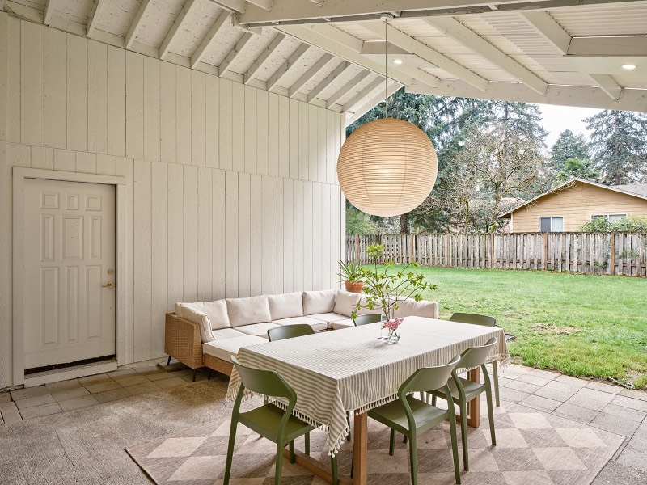
Expanding — first projects underway 27.77°N 82.64°W
Coastal light, block construction, and a generation of bungalows ready to be taken seriously. The same discipline, translated for the Gulf.
Work with us
Each project runs on a small circle of aligned capital and a trusted bench of trades. Both lists are short on purpose — and always open to the right addition.
We take on a limited number of investment partners per project, with conservative underwriting, transparent budgets, and reporting you don’t have to chase. If you’d like to see how a deal is structured, we’ll walk you through a real one.
Start a conversation →Cabinetmakers, tile setters, landscape crews, fabricators — if you sweat the last millimeter, we want to know you. We plan ahead, respect your schedule, and pay like we’d like to be paid.
Introduce your work →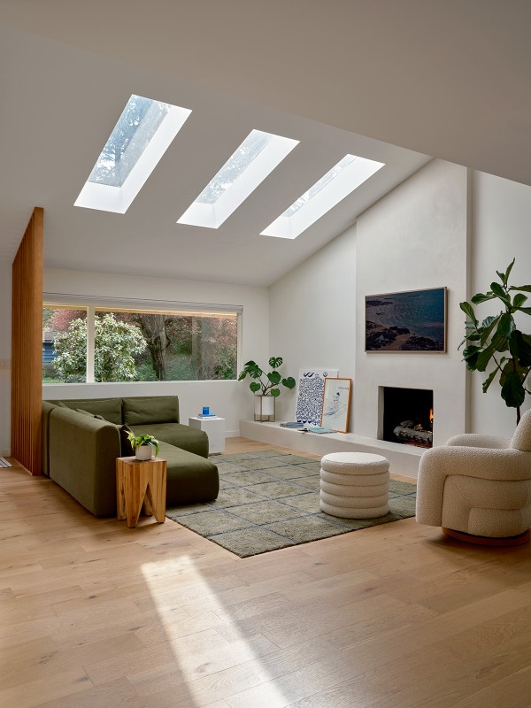
Principal
Tyler approaches each house the way a designer approaches a commission — with a point of view, a respect for what the building wants to be, and zero tolerance for the beige middle. He founded the practice in Portland and is now bringing the same standard to St. Petersburg.
He’s usually on site. The best way to reach him is below.
Contact
Portland, Oregon · St. Petersburg, Florida